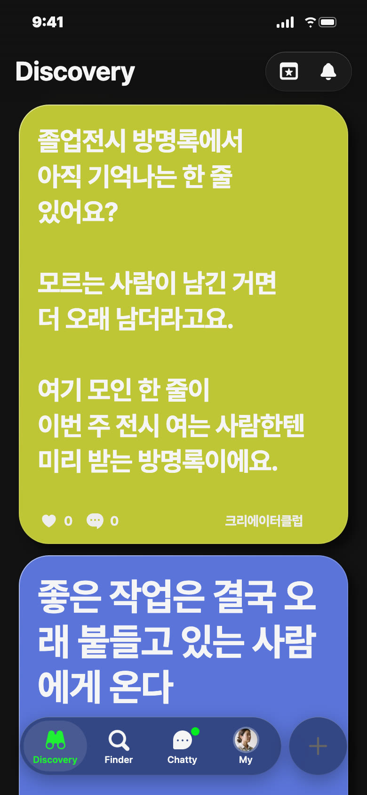
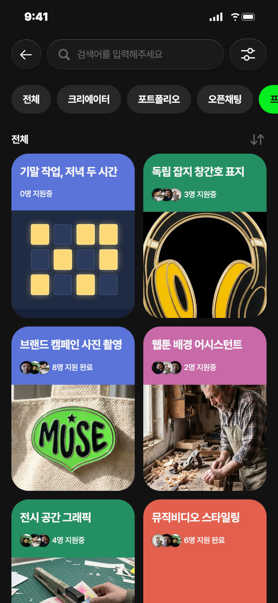
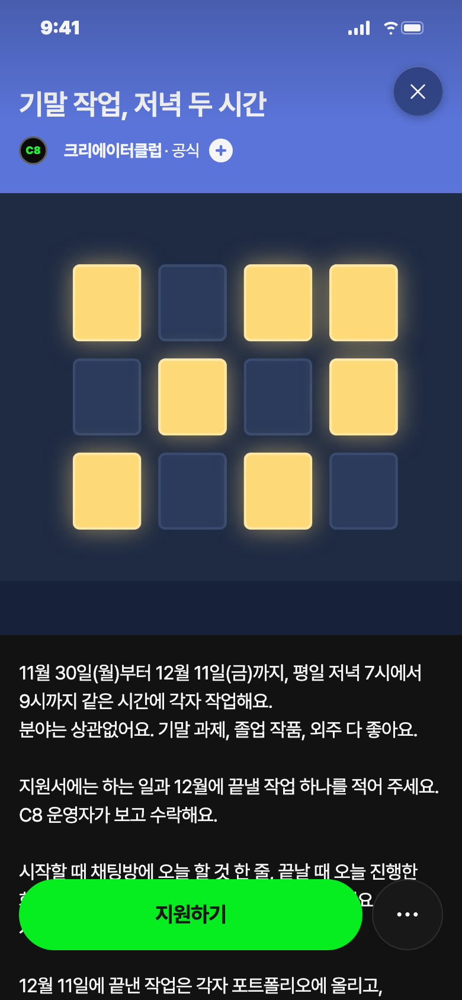
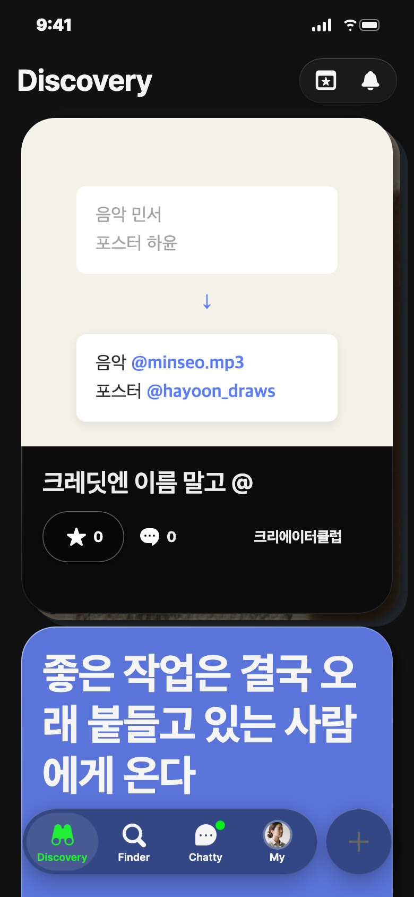
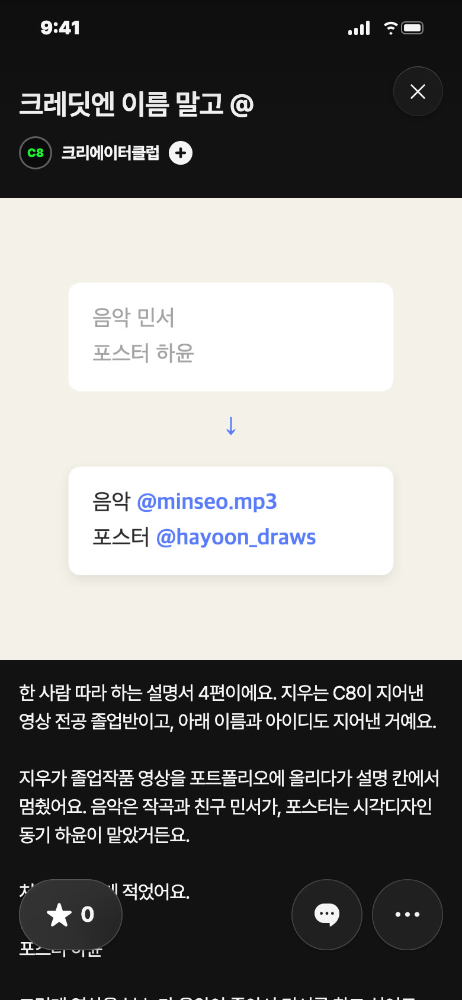

C8 앱 게시 시안 · 11/14(토) — 오늘은 쉬어요(토요일), 셋 다 비축
비축 · 영감 · 일 11/15 낮 12시 후보 · 노랑

칸: 창작자 공감 × 남의 입
왜 이 날: 11월 졸업전시 철, 이번 주에도 전시를 여는 사람이 있음
보낼 사람: 졸전 끝낸 동기에게 「너 그때 그 방명록 얘기 여기 써」
받고 싶은 댓글: 「'다음 전시도 올게요' 하고 이름 없이 간 분이요. 진짜 왔는지 아직 궁금해요」
영감 글
졸업전시 방명록에서 아직 기억나는 한 줄 있어요? 모르는 사람이 남긴 거면 더 오래 남더라고요. 여기 모인 한 줄이 이번 주 전시 여는 사람한텐 미리 받는 방명록이에요.
비축 · 프로젝트 · 파랑


칸: 함께 하는 시간 × 판 열기
왜 비축: 수요일 자리 후보(26.46.0 기준) — 운영자·46 출시일은 게시 전 확정
보낼 사람: 기말 과제 미루는 동기에게 「저녁 7시에 같이 켜자」
받고 싶은 지원 채팅: 「모션 해요. 12월에 졸업작품 타이틀 시퀀스 끝내려고요」
제목
기말 작업, 저녁 두 시간
카테고리
함께 하는 시간
모집 내용
하는 일 · 12월에 끝낼 작업 하나 · 11/27까지 지원 · 11/30~12/11 평일 저녁 7~9시 · 상품 없음
설명
11월 30일(월)부터 12월 11일(금)까지, 평일 저녁 7시에서 9시까지 같은 시간에 각자 작업해요. 분야는 상관없어요. 기말 과제, 졸업 작품, 외주 다 좋아요. 지원서에는 하는 일과 12월에 끝낼 작업 하나를 적어 주세요. C8 운영자가 보고 수락해요. 시작할 때 채팅방에 오늘 할 것 한 줄, 끝날 때 오늘 진행한 화면 한 장을 올려요. 못 오는 날은 건너뛰어도 돼요. 날마다 시간은 일정에 올려 둘게요. 12월 11일에 끝낸 작업은 각자 포트폴리오에 올리고, 게시판에 링크를 모아요. 지원은 11월 27일까지, 상품은 없어요. 혼자였으면 미뤘을 저녁 두 시간, 열흘이면 스무 시간이에요.
비축 · 포트폴리오


칸: 앱 소개 × 남의 입
왜 비축: 설명서 연재 4편 후보(화 11/24 자리) — 3편 「대표작이 없습니다」 다음
보낼 사람: 같이 졸업작품 만든 친구에게 「너 아이디 뭐야, 크레딧에 걸게」
제목
크레딧엔 이름 말고 @
설명
한 사람 따라 하는 설명서 4편이에요. 지우는 C8이 지어낸 영상 전공 졸업반이고, 아래 이름과 아이디도 지어낸 거예요. 지우가 졸업작품 영상을 포트폴리오에 올리다가 설명 칸에서 멈췄어요. 음악은 작곡과 친구 민서가, 포스터는 시각디자인 동기 하윤이 맡았거든요. 처음엔 이렇게 적었어요. 음악 민서 포스터 하윤 그런데 영상을 본 누가 음악이 좋아서 민서를 찾고 싶어도, 이름 두 글자로는 못 찾아요. 그래서 @를 붙였어요. 음악 @minseo.mp3 포스터 @hayoon_draws 설명 칸에서 @를 치고 활동명을 고르면 그 사람 아이디가 들어가요. 피드에서 @minseo.mp3를 누르면 민서 프로필로 바로 가요. 내 포트폴리오인데, 같이 만든 사람한테 가는 길도 하나씩 생겼어요. #설명서 #크레딧